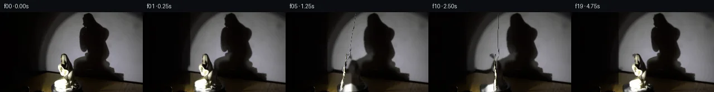

![首帧]()

Round 00
2026-11-05T19:30:11.136624+00:00像素候选变化代码 +437/−0inspection 更新
pixels 86274c38fd51befd · code bd3867db3f0f0458
查看本轮 generate.py 真实 diff
--- previous/generate.py
+++ current/generate.py
@@ -0,0 +1,437 @@
+"""
+generate.py — PixelWorld-Text: Porcelain Statue Rotating on Platform
+Generates 20 frames (256×144 RGB) simulating clockwise rotation of a
+porcelain statue on a black platform with spotlight-cast shadow.
+"""
+import numpy as np
+from PIL import Image
+from pathlib import Path
+
+CASE_DIR = Path('/mnt/bn/embodied-lf3/masiyuan/physics_iq_pixel_r2_full4fps/cleanroom_runs/deepseek-v4-pro/full_matrix_v1/text/case_0084_attempt_01/workspace')
+H, W = 144, 256
+N_FRAMES = 20
+
+# ── 1. Load first frame ─────────────────────────────────────────────
+first = np.array(Image.open(CASE_DIR / 'first_frame.png')).astype(np.float32)
+assert first.shape == (H, W, 3), first.shape
+
+# ── 2. Build masks ──────────────────────────────────────────────────
+brightness = first.sum(axis=2)
+
+# Statue mask: bright pixels in the central region, using local contrast
+# The statue is distinctly brighter than the wall behind it
+statue_mask = np.zeros((H, W), dtype=bool)
+
+# Use a combination of brightness threshold and local edge detection
+# The statue region has very high values compared to surroundings
+b = first.mean(axis=2)
+# Wall is around 100-130, statue highlights go up to 255
+# Use adaptive threshold: brighter than local mean + margin
+from scipy.ndimage import uniform_filter
+local_mean = uniform_filter(b, size=15)
+local_contrast = b - local_mean
+# Statue is significantly brighter than local background
+statue_mask = (local_contrast > 18) & (b > 40)
+
+# Also include connected bright region
+from scipy.ndimage import binary_dilation, binary_erosion, binary_closing, label
+statue_mask = binary_closing(statue_mask, structure=np.ones((5,5)), iterations=2)
+statue_mask = binary_dilation(statue_mask, iterations=2)
+
+# Find the main connected component (the statue)
+labeled, n_labels = label(statue_mask)
+if n_labels > 0:
+ sizes = [(labeled == i).sum() for i in range(1, n_labels+1)]
+ main_label = np.argmax(sizes) + 1
+ # Keep only the largest component and nearby ones in the center
+ statue_mask = np.zeros_like(statue_mask)
+ for i in range(1, n_labels+1):
+ comp = (labeled == i)
+ ys, xs = np.where(comp)
+ cy, cx = ys.mean(), xs.mean()
+ # Keep components in the central statue area (rows 60-135, cols 75-165)
+ if sizes[i-1] > 20 and 60 < cy < 135 and 75 < cx < 165:
+ statue_mask |= comp
+
+# Shadow mask: very dark pixels on the left
+shadow_mask = (brightness < 8) & (np.arange(H)[:, None] < 130)
+shadow_mask = binary_closing(shadow_mask, structure=np.ones((3,3)), iterations=2)
+# Only keep the main shadow blob (left side)
+shadow_mask[:, 82:] = False # Shadow doesn't extend past col ~82 in upper region
+
+print(f"Statue mask pixels: {statue_mask.sum()}")
+print(f"Shadow mask pixels: {shadow_mask.sum()}")
+
+# ── 3. Create clean background ──────────────────────────────────────
+bg = first.copy()
+
+# Fill statue region: interpolate from surrounding wall colors
+# For each statue pixel, fill with the nearest non-statue, non-shadow pixel
+statue_ys, statue_xs = np.where(statue_mask)
+shadow_ys, shadow_xs = np.where(shadow_mask)
+
+# Create a combined "empty" mask (areas to fill)
+empty_mask = statue_mask | shadow_mask
+valid_mask = ~empty_mask
+valid_ys, valid_xs = np.where(valid_mask)
+
+from scipy.spatial import cKDTree
+valid_tree = cKDTree(np.column_stack([valid_ys, valid_xs]))
+
+# Fill statue region
+if len(statue_ys) > 0:
+ _, idx = valid_tree.query(np.column_stack([statue_ys, statue_xs]), k=3)
+ for i, (y, x) in enumerate(zip(statue_ys, statue_xs)):
+ neighbors = idx[i]
+ bg[y, x] = first[valid_ys[neighbors], valid_xs[neighbors]].mean(axis=0)
+
… diff truncated; 350 more lines …